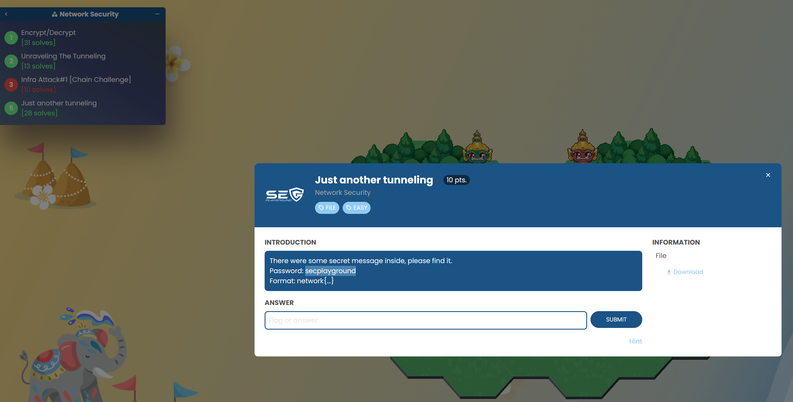
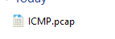
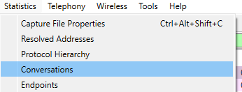
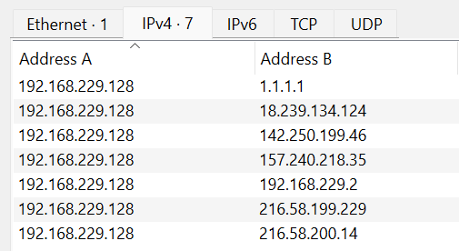
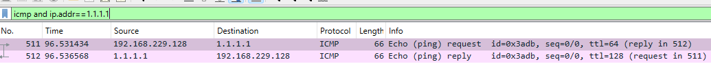
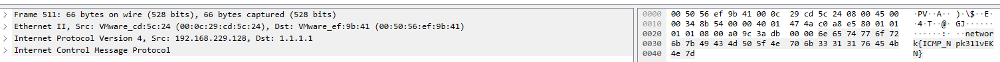

Challenges Index
Back to HomeChallenge 1: Just another tunneling [Easy]
There were some secret message inside, please find it.
Solution
1. โจทย์
2. Download และทำการ Unzip จะได้ไฟล์ pcap ชื่อ "ICMP"
3. เปิดด้วยโปรแกรม wireshark และเข้าไปที่ Menu > Statistics > Conversation เพื่อดูการสื่อสารระหว่าง ต้นทางและปลายทาง
4. จะพบกับหมายเลข IP Address ที่น่าสนใจ คือ "1.1.1.1"
5. จึงทำการคัดกรองด้วย Protocol ICMP และ IP address ที่น่าสนใจ โดยใช้คำสั่ง "icmp and ip.addr==1.1.1.1"
6. จะได้คำตอบ (Flag) ออกมา
